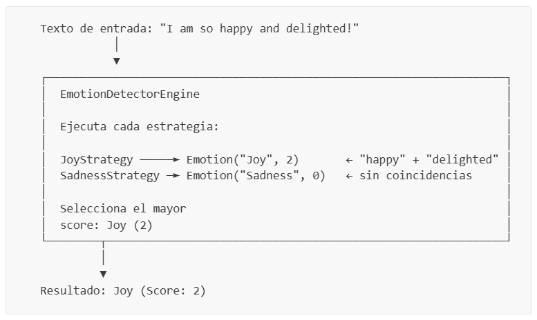
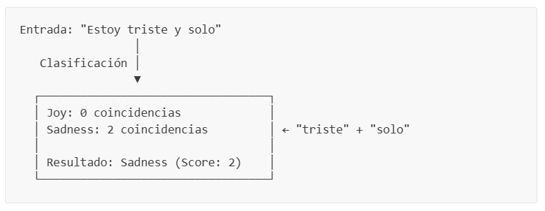
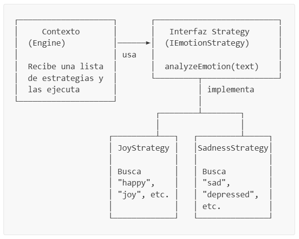
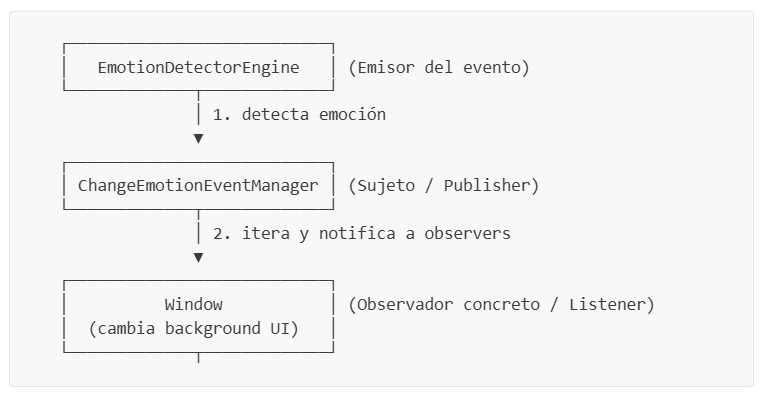

Práctica de Laboratorio: Detector Básico de Emociones
Materia: SIS-211
Tema: Patrón Strategy, Interfaces, Streams y Clasificación Heurística
Tabla de Contenidos
- Objetivos de Aprendizaje
- Introducción
- Conceptos Previos
- ¿Qué es el Procesamiento de Lenguaje Natural (NLP)?
- ¿Qué es una Clasificación?
- ¿Qué son las Reglas Heurísticas?
- ¿Qué es una Interfaz en Java?
- ¿Qué es el Patrón de Diseño Strategy?
- ¿Qué es el Patrón de Diseño Observer?
- Layout Managers en Java Swing — BorderLayout
- Streams en Java — Repaso Rápido
- Method References en Java
- Estructura del Proyecto
- Parte 1 — El Modelo de Datos
- Parte 2 — Definición de Contratos (Interfaces)
- Parte 3 — Estrategias de Detección
- Parte 4 — El Motor de Detección
- Parte 5 — Infraestructura del Patrón Observer y Componentes Visuales
- Parte 6 — Ventana Principal de la Aplicación
- Parte 7 — Punto de Entrada Gráfico
- Parte 8 — Compilación y Ejecución de la UI
- Parte 9 — Desafíos
- Criterios de Evaluación
Objetivos de Aprendizaje
Al completar esta práctica, el estudiante será capaz de:
- Comprender y aplicar el patrón de diseño Strategy para crear sistemas extensibles.
- Definir interfaces como contratos entre componentes de software.
- Utilizar Streams y method references para procesar datos de forma funcional.
- Implementar un sistema básico de clasificación por reglas heurísticas.
- Comprender los fundamentos del Procesamiento de Lenguaje Natural (NLP).
- Diseñar código que cumpla con el Principio Abierto/Cerrado (abierto a extensión, cerrado a modificación).
- Comprender y aplicar el patrón de diseño Observer para comunicar componentes de forma reactiva y desacoplada.
- Diseñar interfaces gráficas de usuario (GUI) responsivas en Java Swing estructuradas mediante BorderLayout.
Introducción
En esta práctica construiremos un Detector Básico de Emociones — una aplicación gráfica de escritorio (GUI en Java Swing) que recibe un texto escrito por el usuario y determina la emoción predominante (alegría, tristeza o neutral) usando palabras clave, cambiando dinámicamente el fondo de la ventana para reflejar el estado de ánimo detectado.
Aunque parezca simple, este proyecto introduce conceptos fundamentales de Inteligencia Artificial y arquitectura de software que se usan en sistemas del mundo real:
- Los asistentes virtuales (Siri, Alexa, ChatGPT) analizan texto para detectar el sentimiento del usuario.
- Las redes sociales clasifican comentarios como positivos, negativos o neutros.
- Los sistemas de atención al cliente detectan enojo o frustración para priorizar tickets.
Nuestro detector es una versión simplificada de estos sistemas, pero utiliza la misma idea central: buscar patrones en el texto para clasificarlo en una categoría.
¿Cómo funciona?

Conceptos Previos
Antes de empezar a programar, comprendamos los conceptos clave que usaremos a lo largo de toda la práctica.
¿Qué es el Procesamiento de Lenguaje Natural (NLP)?
El Procesamiento de Lenguaje Natural (Natural Language Processing o NLP) es una rama de la Inteligencia Artificial que se enfoca en la interacción entre computadoras y el lenguaje humano. Su objetivo es que las máquinas puedan “entender”, interpretar y generar texto.
Es tal como lo hace ChatGPT: recibe texto, lo analiza para extraer significado, y genera una respuesta coherente. En nuestro proyecto, aplicamos NLP de forma muy básica: buscamos palabras clave en el texto para inferir la emoción.
Algunos usos comunes de NLP:
| Aplicación | Ejemplo |
|---|---|
| Análisis de sentimiento | Detectar si una reseña de producto es positiva o negativa |
| Chatbots | Comprender preguntas del usuario y responder |
| Traducción automática | Google Translate |
| Corrector ortográfico | Sugerencias de escritura en el teclado del celular |
| Búsqueda web | Entender qué busca el usuario cuando escribe una consulta |
En nuestro proyecto aplicamos NLP de forma muy básica:
- Normalización: Convertimos el texto a minúsculas (
.toLowerCase()) para que “FELIZ”, “Feliz” y “feliz” sean tratados igual. - Búsqueda de patrones léxicos: Buscamos si ciertas palabras clave aparecen en el texto.
Nota: Los sistemas de NLP del mundo real usan técnicas mucho más avanzadas como redes neuronales, embeddings y transformers. Nuestra implementación con palabras clave es una simplificación pedagógica, pero el concepto central — analizar texto para extraer significado — es el mismo.
¿Qué es una Clasificación?
Clasificar significa asignar una categoría (clase) a un dato de entrada según ciertas reglas o patrones aprendidos.
En nuestro caso:
- Dato de entrada: Un texto escrito por el usuario
- Categorías posibles: Joy (Alegría), Sadness (Tristeza), Neutral
- Regla de clasificación: Contar palabras clave de cada emoción y asignar la que tenga más coincidencias

Analogía: Piensa en un clasificador como un buzón de correo con compartimentos etiquetados. Cada carta (texto) se coloca en el compartimento (emoción) que mejor le corresponde según su contenido.
¿Qué son las Reglas Heurísticas?
Una heurística es una regla práctica o “atajo” que nos permite llegar a una solución razonable sin necesidad de un análisis exhaustivo. No garantiza la respuesta perfecta, pero funciona bien en la mayoría de los casos.
En nuestro detector, las heurísticas son:
- “Si el texto contiene las palabras happy, joy o delighted, probablemente expresa alegría.”
- “Si contiene sad, depressed o unhappy, probablemente expresa tristeza.”
- “Si no contiene ninguna palabra clave, es neutral.”
Ventajas de las heurísticas:
- Son fáciles de entender e implementar
- No requieren datos de entrenamiento (a diferencia del machine learning)
- Son rápidas de ejecutar
Limitaciones:
- No capturan contexto (“No estoy feliz” contiene “feliz” pero expresa tristeza)
- Dependen de un diccionario predefinido (si falta una palabra, no se detecta)
- No entienden ironía ni sarcasmo
¿Qué es una Interfaz en Java?
Una interfaz en Java es un contrato que define qué métodos debe tener una clase, sin especificar cómo los implementa. Es como un plano o acuerdo: “cualquier clase que firme este contrato debe proveer estos métodos”.
// Contrato: todo detector de emociones DEBE tener un método detectEmotion
public interface IEmotionDetector {
Emotion detectEmotion(String text);
}¿Por qué usar interfaces?
- Desacoplamiento: El código que usa un
IEmotionDetectorno necesita saber qué clase concreta es. Solo sabe que tiene el métododetectEmotion(). - Extensibilidad: Puedes crear múltiples implementaciones (un detector simple, uno avanzado con IA, uno para otro idioma) sin cambiar el código que las consume.
- Testabilidad: Puedes crear implementaciones “falsas” (mocks) para pruebas.
// Cualquier clase que implemente esta interfaz DEBE tener el método analyzeEmotion:
public interface IEmotionStrategy {
Emotion analyzeEmotion(String text);
}
// JoyStrategy "firma el contrato" y provee su implementación:
public class JoyStrategy implements IEmotionStrategy {
@Override
public Emotion analyzeEmotion(String text) {
// ... lógica específica para detectar alegría
}
}Convención de nombres: En Java, es común usar el prefijo
Ipara interfaces (comoIEmotionDetector,IEmotionStrategy). Esto facilita distinguir interfaces de clases concretas al leer el código.
¿Qué es el Patrón de Diseño Strategy?
El patrón Strategy es uno de los patrones de diseño más importantes en programación orientada a objetos. Permite definir una familia de algoritmos, encapsular cada uno en su propia clase, y hacerlos intercambiables sin modificar el código que los usa.
El patrón tiene 3 participantes:

¿Por qué es poderoso?
Imagina que tu jefe te pide agregar detección de “enojo”. Con el patrón Strategy:
- Creas una nueva clase
AngerStrategy implements IEmotionStrategy - La agregas a la lista de estrategias:
strategies.add(new AngerStrategy()) - ¡Listo! No modificaste
EmotionDetectorEngineni ninguna otra clase existente.
Esto cumple con el Principio Abierto/Cerrado (OCP):
- Abierto a extensión: puedes agregar nuevas emociones fácilmente
- Cerrado a modificación: no necesitas cambiar código existente
Analogía: Piensa en un reproductor de música. El reproductor (Contexto) puede tocar diferentes formatos: MP3, WAV, FLAC. Cada formato tiene su propio decodificador (Strategy). Para agregar soporte para un nuevo formato, solo agregas un nuevo decodificador — no modificas el reproductor.
¿Qué es el Patrón de Diseño Observer?
El patrón Observer (Observador) es un patrón de diseño de comportamiento que define una relación de dependencia de uno a muchos entre objetos, de forma que cuando un objeto (el Sujeto o Subject) cambia su estado, todos sus dependientes (los Observadores o Observers) son notificados y actualizados automáticamente.
Este patrón permite el desacoplamiento total: el sujeto que emite el evento no sabe quién lo está escuchando ni cómo reaccionará, solo se encarga de avisar.
Componentes en nuestro proyecto:
- Sujeto/Publisher (
ChangeEmotionEventManager): Mantiene el registro de los escuchas y les distribuye las notificaciones. - Interfaz Observer (
ChangeEmotionEventListener): Define el contrato que firman los observadores (onEmotionChanged). - Observador concreto (
Window): Implementa la interfaz y actualiza la UI cuando recibe una notificación del motor.

Layout Managers en Java Swing — BorderLayout
En Java Swing, no se posicionan los componentes usando coordenadas fijas (píxeles), ya que las ventanas pueden cambiar de tamaño. En su lugar, se utilizan Layout Managers (administradores de diseño) que distribuyen los elementos de forma elástica y adaptativa.
El BorderLayout divide el contenedor en 5 regiones geográficas:
NORTH(Norte): Parte superior. Usualmente para títulos o barras de herramientas.SOUTH(Sur): Parte inferior. Usualmente para pies de página o barras de estado.EAST(Este) yWEST(Oeste): Laterales.CENTER(Centro): Ocupa todo el espacio restante. Es el área principal de trabajo.
Regla de oro de BorderLayout: Cada región de un BorderLayout puede contener únicamente un componente. Si agregas más de un componente a la misma posición (por ejemplo, dos elementos en BorderLayout.CENTER), el último reemplazará al anterior, provocando que no se muestren o se superpongan incorrectamente.
Para colocar múltiples componentes en una sola región, debes agruparlos dentro de un sub-panel (Panel o JPanel) intermedio que administre su propio diseño.
Streams en Java — Repaso Rápido
Los Streams permiten procesar colecciones de datos de forma funcional, sin bucles explícitos. Usamos streams extensivamente en este proyecto para contar palabras clave y comparar emociones.
Operaciones que usaremos:
| Operación | ¿Qué hace? | Ejemplo |
|---|---|---|
Stream.of(array) | Crea un stream a partir de un array | Stream.of(keywords) |
.filter(predicate) | Conserva solo elementos que cumplen la condición | .filter(lowerText::contains) |
.count() | Cuenta cuántos elementos pasaron el filtro | .count() |
.map(function) | Transforma cada elemento | .map(s -> s.analyzeEmotion(text)) |
.max(comparator) | Encuentra el elemento máximo según un criterio | .max(comparing score) |
.orElse(default) | Provee un valor por defecto si el resultado está vacío | .orElse(new Emotion("Neutral", 0)) |
.toList() | Recopila los resultados en una lista | .toList() |
Ejemplo de nuestro proyecto — contar palabras clave en un texto:
String[] keywords = { "happy", "joy", "delighted" };
String text = "I am so happy and delighted";
long score = Stream.of(keywords) // Stream: ["happy", "joy", "delighted"]
.filter(text::contains) // Filtro: ["happy", "delighted"] (joy no está)
.count(); // Conteo: 2
// score = 2Method References en Java
Un method reference es una forma abreviada de escribir una lambda que simplemente llama a un método existente.
En este proyecto usamos un tipo especial: referencia a método de instancia de un objeto específico.
String lowerText = "i am so happy and delighted";
// Lambda completa:
Stream.of(keywords).filter(keyword -> lowerText.contains(keyword)).count();
// Method reference (equivalente, más concisa):
Stream.of(keywords).filter(lowerText::contains).count();¿Cómo funciona lowerText::contains?
lowerTextes un objetoStringespecífico (el texto del usuario en minúsculas).::containses una referencia al métodocontainsde ese objeto.- Para cada keyword del stream, Swing llama
lowerText.contains(keyword). - Si retorna
true, el keyword pasa el filtro; si retornafalse, es descartado.
Stream: ["happy", "joy", "delighted"]
│
lowerText::contains
"i am so happy and delighted".contains("happy") → true ✓
"i am so happy and delighted".contains("joy") → false ✗
"i am so happy and delighted".contains("delighted") → true ✓
│
Resultado: ["happy", "delighted"] → count() = 2
Estructura del Proyecto
Crea la siguiente estructura de carpetas. Si usas VS Code con la extensión de Java, src/, bin/ y lib/ ya existirán.
BasicEmotionDetector/
├── src/
│ ├── App.java ← Punto de entrada (Swing EDT)
│ ├── Window.java ← Ventana principal (Observer)
│ ├── core/
│ │ ├── EmotionDetectorEngine.java ← Motor de detección y sujeto Observer
│ │ ├── ChangeEmotionEventManager.java← Gestor de eventos de cambio de emoción
│ │ ├── EventNotifier.java ← Notificador auxiliar
│ │ └── utils/
│ │ └── Pair.java ← Utilidad para par de elementos
│ ├── domain/
│ │ ├── interfaces/
│ │ │ ├── IEmotionDetector.java ← Contrato del detector
│ │ │ └── IEmotionStrategy.java ← Contrato de las estrategias
│ │ ├── listener/
│ │ │ └── ChangeEmotionEventListener.java ← Interfaz Observer
│ │ ├── model/
│ │ │ └── Emotion.java ← Modelo de datos
│ │ └── strategies/
│ │ ├── JoyStrategy.java ← Estrategia: Alegría
│ │ └── SadnessStrategy.java ← Estrategia: Tristeza
│ └── components/
│ ├── Button.java ← JButton estilizado
│ ├── InputField.java ← JTextField estilizado
│ ├── Label.java ← JLabel estilizado
│ └── Panel.java ← JPanel con fondo degradado dinámico
├── bin/
└── lib/
Organización de paquetes:
domaincontiene el dominio del problema: modelos, interfaces y estrategias independientes de la presentación.corecontiene la lógica operativa central y la implementación del patrón Observer.componentscontiene clases Swing personalizadas reutilizables para garantizar una estética premium.Window.javayApp.javaen la raíz orquestan y lanzan la aplicación gráfica en el hilo adecuado.
Parte 1 — El Modelo de Datos
Empezamos por lo más simple: la clase que representa una emoción detectada.
Paso 1.1: Crear la clase Emotion
📄 Archivo: src/domain/model/Emotion.java
La clase Emotion es un simple contenedor de datos que almacena el nombre de la emoción y su puntaje (cuántas palabras clave coincidieron).
package domain.model;
public class Emotion {
private String name;
private Integer score;
public Emotion(String name, Integer score) {
this.name = name;
this.score = score;
}
public String getName() {
return name;
}
public Integer getScore() {
return score;
}
}Analicemos cada parte:
-
package domain.model;— Este archivo pertenece al paquetedomain.model(carpetadomain/model/). -
private String name;— El nombre de la emoción, por ejemplo"Joy"o"Sadness". -
private Integer score;— El puntaje de detección: cuántas palabras clave de esta emoción se encontraron en el texto. UsamosInteger(clase envolvente) en lugar deint(primitivo). -
Constructor
Emotion(String name, Integer score)— Recibe ambos valores y los almacena. -
Getters
getName()ygetScore()— Métodos de acceso para leer los valores. Los atributos sonprivate, así que solo se pueden leer a través de estos métodos. Esto es encapsulamiento.
¿Qué es el encapsulamiento?
Es el principio de ocultar los datos internos de un objeto y proveer acceso controlado a través de métodos públicos. Esto protege la integridad de los datos — nadie puede modificar elscorede una emoción directamente, solo leerlo.
¿Por qué es simple?
Esta clase no tiene lógica — solo almacena datos. En patrones de diseño, esto se conoce como un Data Transfer Object (DTO) o Value Object. Su única responsabilidad es “llevar” los datos de un lugar a otro.
Parte 2 — Definición de Contratos (Interfaces)
Ahora definimos los contratos que establecen qué métodos deben tener nuestros componentes.
Paso 2.1: Crear la interfaz IEmotionStrategy
📄 Archivo: src/domain/interfaces/IEmotionStrategy.java
Esta interfaz define el contrato para las estrategias de detección. Cada estrategia analiza un texto y retorna un objeto Emotion con el nombre de la emoción y su puntaje.
package domain.interfaces;
import domain.model.Emotion;
public interface IEmotionStrategy {
Emotion analyzeEmotion(String text);
}Solo tiene un método:
analyzeEmotion(String text)— Recibe un texto, lo analiza buscando palabras clave de una emoción específica, y retorna un objetoEmotioncon el nombre de esa emoción y cuántas palabras clave encontró.
Principio de responsabilidad única: Cada estrategia solo se preocupa por una emoción.
JoyStrategysolo busca alegría,SadnessStrategysolo busca tristeza. Esto hace que cada clase sea simple, fácil de entender y fácil de probar.
Paso 2.2: Crear la interfaz IEmotionDetector
📄 Archivo: src/domain/interfaces/IEmotionDetector.java
Esta interfaz define el contrato del detector general — el componente que coordina todas las estrategias y determina la emoción ganadora.
package domain.interfaces;
import domain.model.Emotion;
public interface IEmotionDetector {
Emotion detectEmotion(String text);
}Solo tiene un método:
detectEmotion(String text)— Recibe un texto, ejecuta todas las estrategias disponibles, y retorna laEmotioncon el mayor puntaje.
¿Cuál es la diferencia entre
IEmotionStrategyyIEmotionDetector?
IEmotionStrategyIEmotionDetectorResponsabilidad Analiza una emoción Coordina todas las estrategias Cantidad Múltiples (una por emoción) Una sola instancia Retorna El score de su emoción La emoción ganadora Ejemplo JoyStrategy,SadnessStrategyEmotionDetectorEngine
Parte 3 — Estrategias de Detección
Aquí implementamos las estrategias concretas. Cada una busca palabras clave de una emoción específica en el texto.
Paso 3.1: Crear JoyStrategy
📄 Archivo: src/domain/strategies/JoyStrategy.java
Esta estrategia detecta alegría buscando palabras como “happy”, “joy”, “delighted” (en inglés) y “feliz”, “contento”, “alegre” (en español).
package domain.strategies;
import java.util.stream.Stream;
import domain.interfaces.IEmotionStrategy;
import domain.model.Emotion;
public class JoyStrategy implements IEmotionStrategy {
private final String[] joyKeywords = { "happy", "joy", "delighted", "excited", "pleased", "content", "satisfied",
"cheerful", "elated", "ecstatic", "feliz", "contento", "alegre", "maravilloso" };
@Override
public Emotion analyzeEmotion(String text) {
int score = 0;
String lowerText = text.toLowerCase();
score = (int) Stream.of(joyKeywords).filter(lowerText::contains).count();
return new Emotion("Joy", score);
}
}Desglosemos paso a paso:
1. Declaración de palabras clave:
private final String[] joyKeywords = { "happy", "joy", "delighted", ... };Un array con las palabras que asociamos con alegría. final significa que esta referencia no puede cambiar después de la inicialización.
2. Normalización del texto:
String lowerText = text.toLowerCase();Convertimos todo el texto a minúsculas. Así, “HAPPY”, “Happy” y “happy” se tratan igual. Esta es la operación de NLP más básica: normalización.
3. Pipeline funcional de conteo:
score = (int) Stream.of(joyKeywords) // 1. Crear stream del array de keywords
.filter(lowerText::contains) // 2. Quedarse solo con las que están en el texto
.count(); // 3. Contar cuántas pasaron el filtroVeamos cómo funciona con un ejemplo:
Texto: "I am so happy and delighted with the results!"
lowerText: "i am so happy and delighted with the results!"
Stream: ["happy", "joy", "delighted", "excited", "pleased", "content",
"satisfied", "cheerful", "elated", "ecstatic", "feliz",
"contento", "alegre", "maravilloso"]
Después de filter(lowerText::contains):
"happy" → lowerText.contains("happy") = true ✓
"joy" → lowerText.contains("joy") = false ✗
"delighted" → lowerText.contains("delighted") = true ✓
"excited" → lowerText.contains("excited") = false ✗
... (todos los demás = false)
count() = 2
Resultado: new Emotion("Joy", 2)
4. Retornar el resultado:
return new Emotion("Joy", score);Siempre retorna una emoción con nombre "Joy" — la diferencia está en el score. Si el texto no contiene ninguna palabra clave de alegría, el score será 0.
(int)— ¿Por qué el cast?
El método.count()retorna unlong(entero largo de 64 bits), pero nuestroEmotionespera unInteger(entero de 32 bits). El cast(int)convierte ellongaint. Esto es seguro porque nunca tendremos más de 14 coincidencias (el tamaño de nuestro array de keywords).
Paso 3.2: Crear SadnessStrategy
📄 Archivo: src/domain/strategies/SadnessStrategy.java
Esta estrategia detecta tristeza con su propio diccionario de palabras clave, siguiendo exactamente la misma estructura que JoyStrategy.
package domain.strategies;
import java.util.stream.Stream;
import domain.interfaces.IEmotionStrategy;
import domain.model.Emotion;
public class SadnessStrategy implements IEmotionStrategy {
private final String[] sadnessKeywords = { "sad", "depressed", "unhappy", "miserable", "heartbroken", "gloomy",
"melancholy", "sorrowful", "downcast", "triste", "deprimido", "infeliz", "desdichado", "desolado", "llorar",
"solo", "desesperado" };
@Override
public Emotion analyzeEmotion(String text) {
Integer score = 0;
String lowerText = text.toLowerCase();
score = (int) Stream.of(sadnessKeywords).filter(lowerText::contains).count();
return new Emotion("Sadness", score);
}
}Observaciones:
-
La estructura es idéntica a
JoyStrategy— solo cambian las palabras clave y el nombre de la emoción. Este es el poder del patrón Strategy: cada estrategia tiene la misma forma pero diferente contenido. -
El diccionario de tristeza tiene 17 palabras clave (más que el de alegría con 14). Incluye palabras tanto en inglés como en español.
-
Retorna
new Emotion("Sadness", score)— siempre con nombre"Sadness"y el score calculado.
¿Notas el patrón?
Ambas estrategias hacen exactamente lo mismo con diferentes datos:
- Definir un array de palabras clave
- Normalizar el texto con
toLowerCase()- Contar coincidencias con
Stream.of(...).filter(...).count()- Retornar
new Emotion(nombre, score)Si necesitaras agregar una nueva emoción, simplemente copiarías esta estructura con nuevas palabras clave. Más adelante, en los desafíos, harás exactamente eso.
Parte 4 — El Motor de Detección
Paso 4.1: Crear EmotionDetectorEngine
📄 Archivo: src/core/EmotionDetectorEngine.java
El motor es el Contexto del patrón Strategy y el punto de integración con el patrón Observer. Recibe una lista de estrategias de detección, procesa el texto ingresado, mapea la emoción resultante a colores de degradado para la UI, y notifica a todos los escuchas registrados.
package core;
import java.awt.Color;
import java.util.List;
import core.utils.Pair;
import domain.interfaces.IEmotionDetector;
import domain.interfaces.IEmotionStrategy;
import domain.listener.ChangeEmotionEventListener;
import domain.model.Emotion;
public class EmotionDetectorEngine implements IEmotionDetector {
private final List<IEmotionStrategy> strategies;
private final ChangeEmotionEventManager eventManager;
public EmotionDetectorEngine(List<IEmotionStrategy> strategies) {
this.strategies = strategies;
this.eventManager = new ChangeEmotionEventManager();
}
/**
* Registra un observador que reaccionará a los cambios de emoción.
*/
public void addEmotionChangeListener(ChangeEmotionEventListener listener) {
eventManager.addListener(listener);
}
/**
* Remueve un observador previamente registrado.
*/
public void removeEmotionChangeListener(ChangeEmotionEventListener listener) {
eventManager.removeListener(listener);
}
@Override
public Emotion detectEmotion(String text) {
List<Emotion> results = strategies.stream()
.map(strategy -> strategy.analyzeEmotion(text))
.toList();
Emotion detectedEmotion = results.stream()
.max((e1, e2) -> Integer.compare(e1.getScore(), e2.getScore()))
.orElse(new Emotion("Neutral", 0));
// Determinar colores de fondo según la emoción
Pair<Color, Color> gradientColors = getGradientColors(detectedEmotion);
// Notificar a los observadores (desacoplamiento total de la UI)
eventManager.notify(detectedEmotion, gradientColors);
return detectedEmotion;
}
/**
* Mapea cada emoción a un par de colores (degradado de fondo de la ventana).
*/
private Pair<Color, Color> getGradientColors(Emotion emotion) {
return switch (emotion.getName()) {
case "Joy" -> new Pair<Color, Color>(Color.decode("#006B5A"), Color.decode("#4ECDC4"));
case "Sadness" -> new Pair<Color, Color>(Color.decode("#1A1A2E"), Color.decode("#6C6383"));
case "Anger" -> new Pair<Color, Color>(Color.decode("#8B0000"), Color.decode("#FF4444"));
default -> new Pair<Color, Color>(Color.decode("#2C3E50"), Color.decode("#7F8C8D"));
};
}
}Parte 5 — Infraestructura del Patrón Observer y Componentes Visuales
Implementaremos la infraestructura de eventos para el patrón Observer, una utilidad para pares de datos, y los componentes visuales estilizados sobre Swing.
Paso 5.1: Crear la utilidad Pair
📄 Archivo: src/core/utils/Pair.java
Clase genérica para almacenar dos objetos relacionados (como un par de colores de inicio y fin para el degradado).
package core.utils;
public class Pair<K, V> {
private K first;
private V second;
public Pair(K first, V second) {
this.first = first;
this.second = second;
}
public K getFirst() { return first; }
public V getSecond() { return second; }
public void setFirst(K first) { this.first = first; }
public void setSecond(V second) { this.second = second; }
}Paso 5.2: Crear la interfaz del Observer
📄 Archivo: src/domain/listener/ChangeEmotionEventListener.java
La interfaz que define qué método debe implementar cualquier observador que desee reaccionar a cambios de emociones detectados.
package domain.listener;
import java.awt.Color;
import core.utils.Pair;
import domain.model.Emotion;
public interface ChangeEmotionEventListener {
void onEmotionChanged(Emotion detectedEmotion, Pair<Color, Color> colorPair);
}Paso 5.3: Crear el gestor de eventos (ChangeEmotionEventManager)
📄 Archivo: src/core/ChangeEmotionEventManager.java
Esta clase mantiene el listado de observadores registrados (listeners) y se encarga de iterar sobre ellos y notificarlos cuando se dispara un evento.
package core;
import java.awt.Color;
import java.util.ArrayList;
import java.util.List;
import core.utils.Pair;
import domain.listener.ChangeEmotionEventListener;
import domain.model.Emotion;
public class ChangeEmotionEventManager {
private final List<ChangeEmotionEventListener> listeners = new ArrayList<>();
public void addListener(ChangeEmotionEventListener listener) {
listeners.add(listener);
}
public void removeListener(ChangeEmotionEventListener listener) {
listeners.remove(listener);
}
public void notify(Emotion detectedEmotion, Pair<Color, Color> gradientColors) {
for (ChangeEmotionEventListener listener : listeners) {
listener.onEmotionChanged(detectedEmotion, gradientColors);
}
}
}Paso 5.4: Crear los componentes estilizados personalizados
Para dar a la interfaz de usuario una apariencia premium moderna, crearemos subclases de Swing con valores de diseño predeterminados coherentes.
1. Botón Personalizado (Button)
📄 Archivo: src/components/Button.java
package components;
import java.awt.Color;
import java.awt.Cursor;
import java.awt.Font;
import javax.swing.JButton;
import javax.swing.border.CompoundBorder;
import javax.swing.border.EmptyBorder;
import javax.swing.border.LineBorder;
public class Button extends JButton {
public Button(String text) {
super(text);
applyStyle();
}
public Button() {
super();
applyStyle();
}
public void setOnClickListener(Runnable onClick) {
this.addActionListener(e -> onClick.run());
}
private void applyStyle() {
this.setFont(new Font("Segoe UI", Font.BOLD, 14));
this.setForeground(Color.WHITE);
this.setBackground(new Color(60, 90, 180));
this.setFocusPainted(false);
this.setCursor(new Cursor(Cursor.HAND_CURSOR));
this.setBorder(new CompoundBorder(
new LineBorder(new Color(45, 70, 150), 1, true),
new EmptyBorder(8, 20, 8, 20)));
}
}2. Etiqueta Personalizada (Label)
📄 Archivo: src/components/Label.java
package components;
import java.awt.Color;
import java.awt.Font;
import javax.swing.JLabel;
public class Label extends JLabel {
public Label(String text) {
super(text);
applyStyle();
}
public Label() {
super();
applyStyle();
}
private void applyStyle() {
this.setFont(new Font("Segoe UI", Font.BOLD, 14));
this.setForeground(Color.WHITE);
}
}3. Panel con Degradado Dinámico (Panel)
📄 Archivo: src/components/Panel.java
package components;
import java.awt.Color;
import java.awt.Component;
import java.awt.GradientPaint;
import java.awt.Graphics;
import java.awt.Graphics2D;
import java.awt.RenderingHints;
import javax.swing.JPanel;
public class Panel extends JPanel {
private boolean isGradient;
private Color bgOneColor;
private Color bgTwoColor;
public Panel(Color bgOneColor, Color bgTwoColor, boolean isGradient) {
this.bgOneColor = bgOneColor;
this.bgTwoColor = bgTwoColor;
this.isGradient = isGradient;
}
public Panel(boolean isGradient) {
this.bgOneColor = new Color(5, 25, 55);
this.bgTwoColor = new Color(168, 235, 18);
this.isGradient = isGradient;
}
public void addComponent(Component component) {
this.add(component);
}
public void setGradientColors(Color bgOneColor, Color bgTwoColor) {
this.bgOneColor = bgOneColor;
this.bgTwoColor = bgTwoColor;
this.isGradient = true;
}
@Override
protected void paintComponent(Graphics g) {
super.paintComponent(g);
if (isGradient) {
Graphics2D g2d = (Graphics2D) g;
g2d.setRenderingHint(
RenderingHints.KEY_RENDERING,
RenderingHints.VALUE_RENDER_QUALITY);
GradientPaint gradient = new GradientPaint(
0, 0, this.bgOneColor,
0, getHeight(), this.bgTwoColor);
g2d.setPaint(gradient);
g2d.fillRect(0, 0, getWidth(), getHeight());
}
}
}Parte 6 — Ventana Principal de la Aplicación
Paso 6.1: Crear la interfaz gráfica (Window)
📄 Archivo: src/Window.java
La ventana principal es un observador registrado del motor. Implementa ChangeEmotionEventListener para reaccionar al evento de cambio de emoción y aplica BorderLayout de forma estricta, usando sub-paneles para evitar colisiones visuales de los componentes.
import java.awt.BorderLayout;
import java.awt.Color;
import java.awt.Dimension;
import java.awt.Font;
import java.util.List;
import javax.swing.BorderFactory;
import javax.swing.JFrame;
import javax.swing.JOptionPane;
import javax.swing.JScrollPane;
import javax.swing.JTextArea;
import javax.swing.UIManager;
import javax.swing.UnsupportedLookAndFeelException;
import javax.swing.plaf.nimbus.NimbusLookAndFeel;
import core.EmotionDetectorEngine;
import core.utils.Pair;
import domain.interfaces.IEmotionStrategy;
import domain.listener.ChangeEmotionEventListener;
import domain.model.Emotion;
import components.Button;
import components.Label;
import components.Panel;
public class Window extends JFrame implements ChangeEmotionEventListener {
private Panel backgroundPanel;
private Label resultLabel;
private Label scoreLabel;
private JTextArea textArea;
private EmotionDetectorEngine detector;
public Window(String title, int width, int height) {
applyLookAndFeel();
initializeFrame(title, width, height);
initializeDetector();
buildFormPanel();
}
private void applyLookAndFeel() {
try {
UIManager.setLookAndFeel(new NimbusLookAndFeel());
} catch (UnsupportedLookAndFeelException e) {
System.err.println("Nimbus L&F no disponible, usando predeterminado.");
}
}
private void initializeFrame(String title, int width, int height) {
this.setTitle(title);
this.setSize(width, height);
this.setMinimumSize(new Dimension(450, 550));
this.setDefaultCloseOperation(JFrame.EXIT_ON_CLOSE);
this.setLocationRelativeTo(null);
this.setLayout(new BorderLayout());
}
private void initializeDetector() {
List<IEmotionStrategy> strategies = List.of(
new domain.strategies.JoyStrategy(),
new domain.strategies.SadnessStrategy());
detector = new EmotionDetectorEngine(strategies);
// Registrar la ventana como observador de cambios de emoción
detector.addEmotionChangeListener(this);
}
private void buildFormPanel() {
// Panel con degradado inicial por defecto (colores neutros)
backgroundPanel = new Panel(
new Color(44, 62, 80),
new Color(127, 140, 141),
true);
backgroundPanel.setLayout(new BorderLayout());
// Panel de formulario transparente que organiza los bloques verticalmente
Panel formPanel = new Panel(false);
formPanel.setOpaque(false);
formPanel.setLayout(new BorderLayout(0, 15));
formPanel.setBorder(BorderFactory.createEmptyBorder(25, 40, 25, 40));
// ─── Cabecera (North) ───
Panel headerPanel = new Panel(false);
headerPanel.setOpaque(false);
headerPanel.setLayout(new BorderLayout(0, 5));
Label titleLabel = new Label("Basic Emotion Detector");
titleLabel.setFont(new Font("Segoe UI", Font.BOLD, 22));
titleLabel.setHorizontalAlignment(Label.CENTER);
headerPanel.add(titleLabel, BorderLayout.NORTH);
Label subtitleLabel = new Label("Write a sentence and detect its emotion");
subtitleLabel.setFont(new Font("Segoe UI", Font.PLAIN, 13));
subtitleLabel.setForeground(new Color(200, 210, 220));
subtitleLabel.setHorizontalAlignment(Label.CENTER);
headerPanel.add(subtitleLabel, BorderLayout.CENTER);
formPanel.add(headerPanel, BorderLayout.NORTH);
// ─── Área de Entrada y Botones (Center) ───
Panel inputPanel = new Panel(false);
inputPanel.setOpaque(false);
inputPanel.setLayout(new BorderLayout(0, 8));
Label inputLabel = new Label("Your text:");
inputPanel.add(inputLabel, BorderLayout.NORTH);
textArea = new JTextArea(4, 30);
textArea.setLineWrap(true);
textArea.setWrapStyleWord(true);
textArea.setFont(new Font("Segoe UI", Font.PLAIN, 14));
textArea.setForeground(new Color(33, 33, 33));
textArea.setBackground(new Color(245, 245, 250));
textArea.setCaretColor(new Color(60, 90, 180));
textArea.setBorder(BorderFactory.createEmptyBorder(8, 10, 8, 10));
textArea.setToolTipText("Write a sentence to analyze its emotion");
JScrollPane scrollPane = new JScrollPane(textArea);
scrollPane.setBorder(BorderFactory.createLineBorder(new Color(180, 180, 200), 1, true));
inputPanel.add(scrollPane, BorderLayout.CENTER);
// Panel de botones (FlowLayout por defecto)
Panel buttonPanel = new Panel(false);
buttonPanel.setOpaque(false);
Button analyzeButton = new Button("Analyze Emotion");
analyzeButton.setToolTipText("Detects the predominant emotion in the text");
analyzeButton.setOnClickListener(this::handleAnalyze);
Button clearButton = new Button("Clear");
clearButton.setToolTipText("Clears the text and resets the result");
clearButton.setBackground(new Color(120, 130, 145));
clearButton.setOnClickListener(this::handleClear);
buttonPanel.add(analyzeButton);
buttonPanel.add(clearButton);
inputPanel.add(buttonPanel, BorderLayout.SOUTH);
formPanel.add(inputPanel, BorderLayout.CENTER);
// ─── Panel de Resultados (South) ───
Panel resultPanel = new Panel(false);
resultPanel.setOpaque(false);
resultPanel.setLayout(new BorderLayout(0, 5));
resultPanel.setBorder(BorderFactory.createCompoundBorder(
BorderFactory.createLineBorder(new Color(255, 255, 255, 40), 1, true),
BorderFactory.createEmptyBorder(15, 20, 15, 20)));
resultLabel = new Label("No emotion detected yet");
resultLabel.setFont(new Font("Segoe UI", Font.PLAIN, 18));
resultLabel.setForeground(new Color(200, 210, 220));
resultLabel.setHorizontalAlignment(Label.CENTER);
scoreLabel = new Label("");
scoreLabel.setFont(new Font("Segoe UI", Font.PLAIN, 14));
scoreLabel.setForeground(new Color(180, 190, 200));
scoreLabel.setHorizontalAlignment(Label.CENTER);
resultPanel.add(resultLabel, BorderLayout.CENTER);
resultPanel.add(scoreLabel, BorderLayout.SOUTH);
formPanel.add(resultPanel, BorderLayout.SOUTH);
// ─── Ensamblado Final ───
backgroundPanel.add(formPanel, BorderLayout.CENTER);
this.add(backgroundPanel, BorderLayout.CENTER);
}
private void handleAnalyze() {
String text = textArea.getText().trim();
if (text.isEmpty()) {
JOptionPane.showMessageDialog(
this,
"Please enter some text to analyze.",
"Empty text",
JOptionPane.WARNING_MESSAGE);
return;
}
// Ejecutar detección (esto notificará automáticamente al Observer)
detector.detectEmotion(text);
}
private void handleClear() {
textArea.setText("");
resultLabel.setText("No emotion detected yet");
resultLabel.setForeground(new Color(200, 210, 220));
scoreLabel.setText("");
// Resetear degradado a neutro
this.backgroundPanel.setGradientColors(
new Color(44, 62, 80),
new Color(127, 140, 141));
backgroundPanel.repaint();
textArea.requestFocusInWindow();
}
// ─── Callback del Observer ───
@Override
public void onEmotionChanged(Emotion detectedEmotion, Pair<Color, Color> colorPair) {
// 1. Cambiar degradado de fondo dinámicamente
backgroundPanel.setGradientColors(colorPair.getFirst(), colorPair.getSecond());
backgroundPanel.repaint();
// 2. Actualizar etiquetas de texto
String emotionEmoji = getEmotionEmoji(detectedEmotion.getName());
resultLabel.setText(emotionEmoji + " " + detectedEmotion.getName());
resultLabel.setForeground(Color.WHITE);
if (detectedEmotion.getScore() > 0) {
scoreLabel.setText("Score: " + detectedEmotion.getScore() + " keyword(s) matched");
} else {
scoreLabel.setText("No keywords matched");
}
scoreLabel.setForeground(new Color(220, 230, 240));
}
private String getEmotionEmoji(String emotionName) {
return switch (emotionName) {
case "Joy" -> "😊";
case "Sadness" -> "😔";
case "Anger" -> "😠";
default -> "😐";
};
}
}Parte 7 — Punto de Entrada Gráfico
Paso 7.1: Crear la clase App
📄 Archivo: src/App.java
Lanza la interfaz gráfica en el hilo de despacho de eventos de Swing (Event Dispatch Thread o EDT) para garantizar la seguridad de hilos (thread-safety).
import javax.swing.SwingUtilities;
public class App {
public static void main(String[] args) {
SwingUtilities.invokeLater(() -> {
Window window = new Window("Basic Emotion Detector", 550, 600);
window.setVisible(true);
});
}
}Parte 8 — Compilación y Ejecución de la UI
Compilar desde la terminal
# Compilar todo el código organizado en paquetes
javac -d bin src/core/utils/*.java src/domain/model/*.java src/domain/interfaces/*.java src/domain/listener/*.java src/domain/strategies/*.java src/core/*.java src/components/*.java src/Window.java src/App.javaEjecutar la aplicación
java -cp bin AppParte 9 — Desafíos
Los siguientes desafíos aplican al proyecto con interfaz gráfica Swing y el patrón Observer, y serán evaluados durante la revisión.
Desafío 1: Agregar la emoción Enojo (AngerStrategy) y su color en la UI
Dificultad: ⭐ Fácil | Puntos: 5
Crea la estrategia para la emoción de enojo y haz que el degradado cambie a un rojo intenso al detectarse.
Requisitos:
- Crea
src/domain/strategies/AngerStrategy.javaque implementeIEmotionStrategycon palabras como"angry","furious","rage","enojado","furioso","molesto". - Agrégala a la lista de estrategias de
Window.java. - El motor
EmotionDetectorEngineya tiene definido el mapeo de color para"Anger"(#8B0000y#FF4444). Asegúrate de que las palabras clave de la estrategia coincidan exactamente con este nombre. - Escribe un texto enojado en el área de texto de la aplicación y verifica que el degradado cambie a tonos rojos.
Desafío 2: Porcentaje de confianza dinámico en el UI
Dificultad: ⭐⭐ Intermedio | Puntos: 7
Muestra qué tan seguro está el detector calculando el porcentaje de palabras coincidentes respecto al diccionario disponible de la emoción.
Requisitos:
- Modifica la clase
Emotionpara guardar un campoconfidence(de tipodouble) e inicialízalo en el constructor. - Modifica cada estrategia (
JoyStrategy,SadnessStrategy, etc.) para calcular la confianza:double confidence = ((double) score / totalDePalabrasClaveEnDiccionario) * 100; - Modifica la llamada del callback del Observer en
Window.javapara que muestre la confianza formateada en elscoreLabel(ej.Score: 2 keyword(s) matched (14.3% confidence)).
Desafío 3: Historial de detecciones en la interfaz gráfica
Dificultad: ⭐⭐⭐ Difícil | Puntos: 7
Crea un historial visual que guarde un registro de las últimas detecciones del usuario dentro de la misma ventana de Swing.
Requisitos:
- Crea una sección pequeña o panel lateral/inferior usando
BorderLayout.EASToBorderLayout.SOUTHque represente un “Historial”. - Cada vez que el motor notifique una nueva emoción (
onEmotionChanged), agrega una etiqueta con el nombre de la emoción y el puntaje a este panel. - Asegúrate de limitar el historial para que solo muestre las últimas 3 o 4 emociones para que no sature la ventana de la aplicación.
- Utiliza
repaint()yrevalidate()para actualizar el contenedor dinámicamente tras cada cambio.
Desafío 4: Animación de parpadeo suave al resetear (Clear)
Dificultad: ⭐⭐ Intermedio | Puntos: 6
Modifica la acción de limpieza para realizar un efecto visual interactivo.
Requisitos:
- Al hacer clic en “Clear”, el fondo no debe cambiar bruscamente. Implementa un pequeño
javax.swing.Timerque cambie temporalmente el fondo a un color grisáceo muy claro y regrese gradualmente (durante unos 300 ms) al degradado neutral. - Esto introduce a los estudiantes al concepto de programación asíncrona mediante temporizadores en la cola de eventos de Swing.
Criterios de Evaluación
| Criterio | Puntos | Descripción |
|---|---|---|
| Creación correcta de la interfaz y layouts | 30 | Las interfaces IEmotionStrategy, IEmotionDetector y ChangeEmotionEventListener están correctamente creadas. El diseño visual en Window.java implementa BorderLayout sin superposiciones y con sub-paneles bien estructurados. |
| Uso adecuado de componentes y diseño Swing | 20 | Los componentes heredan correctamente de clases nativas de Swing en el paquete components. Se aplica encapsulamiento y el look and feel Nimbus correctamente. |
| Arquitectura de patrones (Strategy y Observer) | 25 | El motor ejecuta de forma polimórfica las estrategias. El motor es independiente del sistema gráfico y notifica los cambios mediante eventos. El registro y eliminación de observadores funciona correctamente. |
| Desafío 1 — AngerStrategy | 5 | Nueva estrategia implementada y mapeada visualmente en tonos rojos en la UI al ejecutarse. |
| Desafío 2 — Confianza en el UI | 7 | Cálculo preciso del porcentaje de palabras clave y renderizado con formato numérico en la UI. |
| Desafío 3 — Historial en UI | 7 | Lista dinámica de las últimas detecciones mostrada de manera integrada dentro del diseño elástico. |
| Desafío 4 — Animación con Timer | 6 | Implementación de transición o efecto visual interactivo mediante Swing Timer al resetear. |
| Total | 100 |